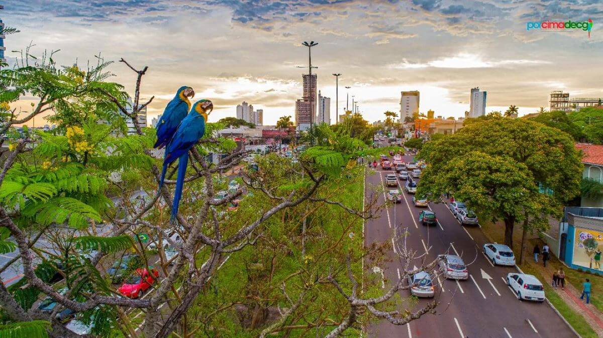
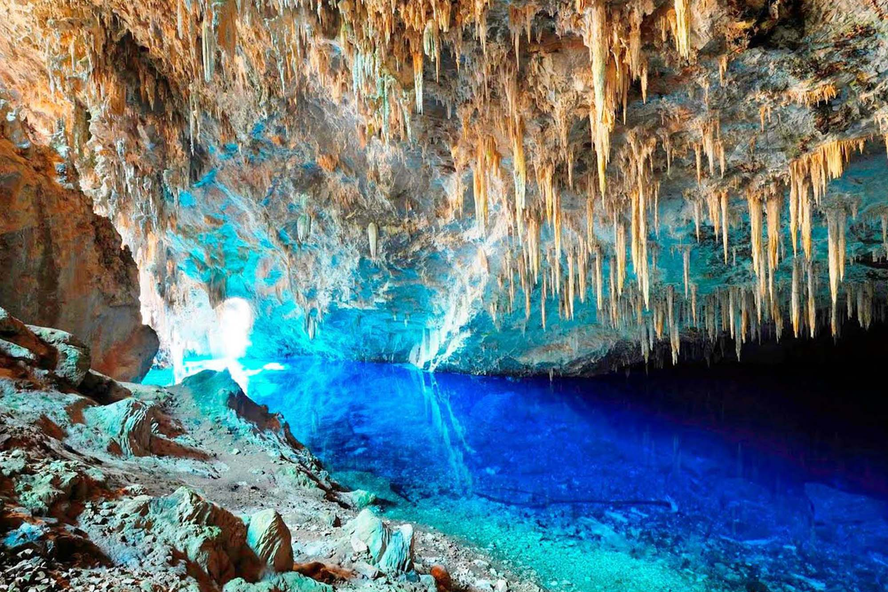

Curiosidades

Campo Grande
Campo Grande é um município brasileiro da região Centro-Oeste, capital do estado de Mato Grosso do Sul. Reduto histórico de divisionistas entre o sul e o norte. Campo Grande foi fundada por mineiros, que vieram aproveitar os campos de pastagens nativas e as águas cristalinas da região dos cerrados.

Bonito
Bonito é uma cidade e centro de ecoturismo no estado brasileiro de Mato Grosso do Sul. A área circundante é conhecida pelos rios de água translúcida, como o Rio da Prata, um destino de snorkeling repleto de peixes. O Abismo Anhumas é uma enorme caverna coberta de estalactites que permite a prática de rapel e de mergulho num lago subterrâneo. Bandos de araras criam ninhos no profundo Buraco das Araras, de cor ocre.

Pantanal
O Complexo do Pantanal, ou simplesmente Pantanal, é um bioma constituído principalmente por uma savana estépica, alagada em sua maior parte, com 250 mil quilômetros quadrados de extensão e uma altitude média de 100 metros.